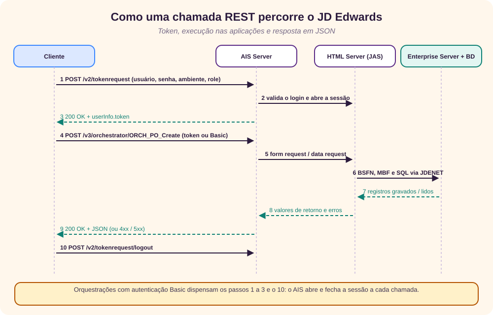
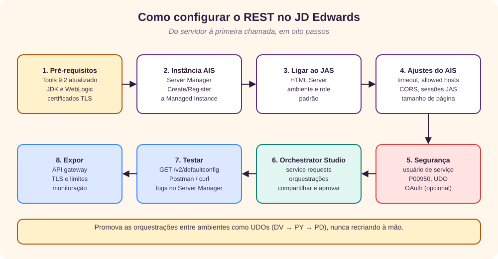
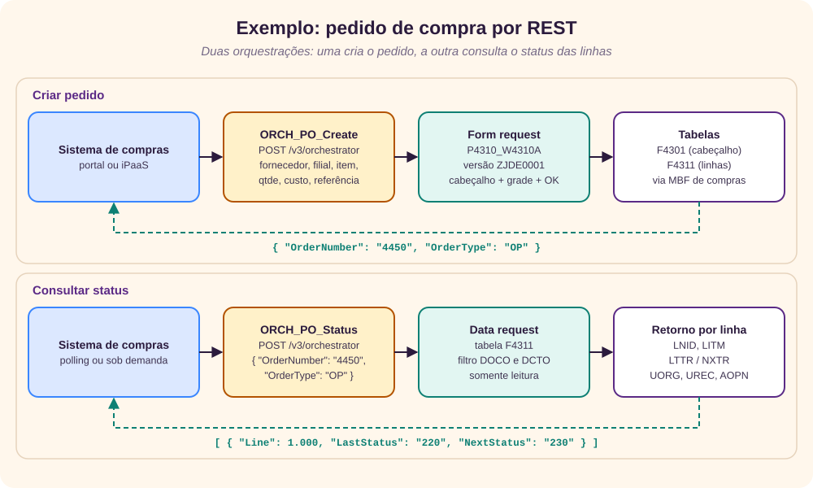
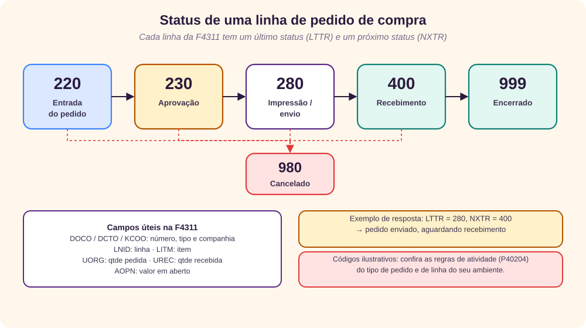

Conceito
REST (Representational State Transfer) é um estilo de arquitetura para serviços web: cada recurso tem um endereço (URL), as operações usam os verbos do HTTP (GET, POST, PUT, DELETE) e os dados trafegam em um formato simples, quase sempre JSON. Cada chamada carrega tudo o que o servidor precisa para atendê-la, o que torna as integrações previsíveis e fáceis de testar com ferramentas comuns, como Postman ou curl.
No JD Edwards EnterpriseOne, a porta REST é o AIS Server (Application Interface Services). Ele recebe requisições HTTP com JSON e as traduz em ações sobre o JDE: abrir uma aplicação e preencher um formulário, ler uma tabela ou executar uma orquestração. O ponto central é que o AIS não grava direto no banco: ele executa as mesmas aplicações e business functions que um usuário usaria, com as mesmas versões, opções de processamento e validações. [1] [3]
Sobre o AIS roda o Orchestrator, que permite desenhar, sem código C, uma sequência de passos (regras, form requests, data requests, conectores) e publicá-la como um único endpoint REST. É assim que a Oracle recomenda integrar o JDE hoje. [2]
- AIS Server
- Servidor Java (em WebLogic ou WebSphere) que expõe o JDE como serviços REST sob o caminho
/jderest. - Form request
- Chamada que executa um formulário de uma aplicação (por exemplo,
P4310_W4310A) como se fosse um usuário. - Data request
- Consulta de leitura sobre uma tabela ou business view (por exemplo,
F4311). - Orquestração
- Sequência de passos publicada como endpoint, com entradas e saídas nomeadas por você.
- Orchestrator Studio
- Ferramenta web para criar, testar e compartilhar orquestrações.
- UDO
- User Defined Object: objeto criado por usuários, como orquestrações, com ciclo de aprovação e promoção próprio.
Infraestrutura necessária
O REST no JDE não é um produto à parte: é uma camada a mais sobre a instalação existente. O mínimo é o seguinte: [1] [5]
| Componente | Papel | Observação |
|---|---|---|
| Tools Release 9.2 | Base técnica que traz o AIS e o Orchestrator | Quanto mais recente, mais recursos (v3 do orchestrator, OAuth, conectores, Groovy). |
| Enterprise Server | Executa business functions, MBFs e UBEs | Já existe em qualquer instalação. |
| HTML Server (JAS) | Executa as aplicações web que o AIS dirige | Recomenda-se um JAS dedicado ao AIS em produção, para isolar carga. |
| AIS Server | Expõe os serviços REST em /jderest | Instância Java gerenciada pelo Server Manager, em WebLogic ou WebSphere. |
| Server Manager | Instala, configura e monitora as instâncias | Console central com agentes em cada servidor. |
| Orchestrator Studio | Desenho e teste de orquestrações | Acessado pelo navegador; nas versões recentes do Tools, integrado ao EnterpriseOne. |
| Certificados TLS | HTTPS de ponta a ponta | Nunca expor o AIS em HTTP simples fora da rede interna. |
| API gateway / proxy reverso | Ponto único de entrada, TLS, WAF, limites de taxa | Opcional, mas recomendado sempre que houver consumidores fora da rede. |
| Usuário de serviço | Identidade técnica das integrações | Com o mínimo privilégio, uma role específica e senha gerenciada em cofre. |
Arquitetura
A figura mostra o caminho de uma chamada. Os consumidores (um portal, uma plataforma iPaaS, um aplicativo móvel) falam HTTPS com o API gateway, que encaminha ao AIS Server. O AIS conversa com o HTML Server, que por sua vez usa o protocolo interno JDENET para chegar ao Enterprise Server, onde as business functions acessam o banco. [5]
Três decisões de arquitetura fazem diferença:
- Camada de entrada. Colocar um API gateway (OCI API Gateway, Apigee, Kong, Azure APIM ou um proxy reverso) na frente do AIS centraliza TLS, autenticação externa, limites de taxa e registro de acessos, e esconde a topologia interna.
- Isolamento. Em produção, o AIS aponta para um HTML Server próprio. Assim, um pico de integrações não deixa lentos os usuários interativos.
- Alta disponibilidade. Duas ou mais instâncias de AIS atrás de um balanceador. Como o token amarra a sessão a uma instância, o balanceador precisa de afinidade (sticky session) ou o cliente deve usar orquestrações com autenticação a cada chamada.
Como funciona o REST no JD Edwards
O AIS publica um conjunto de serviços. Os mais usados estão na tabela; a lista completa está na referência da API. [3]
| Serviço | Endpoint | Para quê |
|---|---|---|
| Token | POST /jderest/v2/tokenrequest | Autentica e abre uma sessão; devolve o token. |
| Logout | POST /jderest/v2/tokenrequest/logout | Encerra a sessão e libera o JAS. |
| Form service | POST /jderest/v2/formservice | Executa um formulário: preenche campos, clica botões, lê a grade. |
| Data service | POST /jderest/v2/dataservice | Consulta, conta ou agrega uma tabela ou business view. |
| App stack | POST /jderest/v2/appstack | Navega entre formulários mantendo o estado. |
| Opções de processamento | POST /jderest/v2/poservice | Lê as opções de processamento de uma versão. |
| Orquestração | POST /jderest/v3/orchestrator/{nome} | Executa uma orquestração publicada. |
| Descoberta | GET /jderest/discover | Lista as orquestrações que o usuário pode executar. |
| Configuração | GET /jderest/v2/defaultconfig | Mostra a versão e as capacidades do AIS; ótimo teste de saúde. |
O ciclo de uma chamada

Autenticação
- Token AIS: o cliente chama
/v2/tokenrequestcom usuário, senha, ambiente e role, e reutiliza o token nas chamadas seguintes: no corpo ("token") para os serviços v2 e no cabeçalhojde-AIS-Authpara o orchestrator v3. É o modelo mais eficiente para muitas chamadas em sequência. - HTTP Basic: quando habilitada no AIS, uma orquestração pode ser chamada com
Authorization: Basic; o AIS abre e fecha a sessão a cada chamada. É simples e combina com balanceadores sem afinidade, mas custa uma sessão por chamada. - OAuth 2.0: nas versões recentes do Tools, o AIS aceita tokens emitidos por um provedor de identidade externo, o que evita guardar a senha do JDE no consumidor. [1]
Respostas e erros
O AIS responde 200 com o JSON do serviço. Os erros mais comuns são 400 (JSON inválido), 403 (sem autorização), 415 (faltou Content-Type: application/json), 444 (token inválido ou expirado) e 500 (erro no processamento, com o corpo trazendo a mensagem e, em orquestrações, o texto de erro do passo). Erros de negócio do JDE, como "fornecedor inválido", vêm no JSON e precisam ser tratados pelo cliente. [4]
Como configurar

- Pré-requisitos. Confirme o Tools Release, a versão de JDK e de WebLogic suportadas (Certifications no My Oracle Support) e tenha os certificados TLS do host do AIS.
- Criar a instância. No Server Manager, use Create/Register a Managed Instance, escolha EnterpriseOne Application Interface Services (AIS) Server, informe o servidor de aplicação, a porta HTTPS e o componente de software do Tools. [1]
- Ligar ao HTML Server. Na configuração da instância, aponte para o JAS (de preferência dedicado), defina ambiente e role padrão e confira se o JAS reconhece o AIS (o Server Manager mostra a ligação nos dois lados).
- Ajustar a configuração. Revise o timeout de sessão, Allowed Hosts e CORS (para chamadas de navegador), Keep JAS Sessions Open, o tamanho máximo de página de dados e a opção de autenticação Basic, se for usá-la.
- Segurança. Crie o usuário de serviço e uma role própria. No Security Workbench (P00950), libere só as aplicações e versões necessárias e a execução das orquestrações (segurança de UDO). Se usar OAuth, configure o provedor de identidade.
- Orchestrator Studio. Crie os service requests e as orquestrações, teste no próprio Studio e compartilhe; o administrador aprova e publica. [2]
- Testar. Um
GET /jderest/v2/defaultconfigresponde sem autenticação e mostra a versão do AIS. Depois, peça um token e chame uma orquestração com Postman ou curl. Os logs ficam no Server Manager. - Expor. Publique pelo API gateway, com TLS, limites de taxa, registro de acessos e alertas de disponibilidade.
# teste de saúde (sem autenticação)
GET https://ais.empresa.com:9443/jderest/v2/defaultconfig
# resposta resumida
{ "jasHost": "jas-ais.empresa.local", "aisVersion": "...",
"capabilityList": [ { "name": "orchestrator" }, { "name": "dataServiceAggregation" }, ... ] }Checklist antes de produção
- HTTPS em todos os saltos e certificados com renovação planejada.
- Usuário de serviço com mínimo privilégio e senha em cofre.
- JAS dedicado ao AIS e timeouts compatíveis com o consumidor.
- Orquestrações promovidas como UDOs (DV → PY → PD), nunca recriadas à mão.
- Monitoração: disponibilidade do
defaultconfig, tempo de resposta e taxa de erros.
Exemplo: pedido de compra passo a passo
O cenário: um sistema de compras externo precisa criar pedidos de compra (tipo OP) no JDE e, depois, acompanhar o status de cada linha. Vamos criar duas orquestrações: ORCH_PO_Create e ORCH_PO_Status. [6]

Passo 1. Preparar o JDE
- Escolha a versão do P4310 (Purchase Orders) que será usada pela integração, por exemplo
ZJDE0001ou uma cópia própria, com as opções de processamento corretas (tipo de pedido OP, aprovação, impressão). - Libere essa versão e a execução das duas orquestrações para a role do usuário de serviço.
- Crie o pedido uma vez à mão, com os mesmos dados que a integração enviará, para confirmar que não há erro de negócio.
Passo 2. Criar o form request no Orchestrator Studio
No Studio, crie um service request do tipo Form Request chamado SR_PO_Create, carregue a aplicação P4310, formulário W4310A (Order Detail), versão ZJDE0001. O Studio lista os campos do cabeçalho e as colunas da grade; marque os que recebem valor e a ordem das ações: [9]
| Ordem | Campo do formulário | Entrada da orquestração |
|---|---|---|
| 1 | Supplier (fornecedor, AN8) | Supplier |
| 2 | Branch/Plant (filial, MCU) | BranchPlant |
| 3 | Reference (VR01) | ExternalRef |
| 4 | Grade: Item Number (LITM) | Item |
| 5 | Grade: Quantity Ordered (UORG) | Quantity |
| 6 | Grade: Unit Cost (PRRC) | UnitCost |
| 7 | Botão OK | (ação) |
Em Returns, marque o número do pedido (DOCO) e o tipo (DCTO). Se a versão limpar a tela depois do OK, uma alternativa robusta é gravar uma referência externa única no campo Reference e buscar o número do pedido por ela em um data request logo em seguida; essa referência também evita duplicidade quando o cliente repete a chamada.
Passo 3. Criar a orquestração de criação
Crie a orquestração ORCH_PO_Create, adicione o passo SR_PO_Create, mapeie as entradas e dê nomes de negócio às saídas (OrderNumber, OrderType). Opcionalmente, antes do form request, inclua uma regra que rejeite quantidade ou custo menores ou iguais a zero, para devolver um erro claro sem abrir a aplicação. Teste no Studio e compartilhe para aprovação.
Passo 4. Chamar a criação do pedido
# com autenticação Basic (se habilitada no AIS)
POST https://ais.empresa.com:9443/jderest/v3/orchestrator/ORCH_PO_Create
Authorization: Basic <base64 usuário:senha>
Content-Type: application/json
{ "Supplier": "4343", "BranchPlant": "30", "ExternalRef": "COMPRAS-2026-0917",
"Item": "1001", "Quantity": "10", "UnitCost": "12.50" }
# resposta 200
{ "OrderNumber": "4450", "OrderType": "OP" }Se o consumidor fizer muitas chamadas, use o modelo com token: peça o token uma vez e envie-o no cabeçalho jde-AIS-Auth.
# 1. obter o token
POST https://ais.empresa.com:9443/jderest/v2/tokenrequest
{ "username": "SVC_COMPRAS", "password": "********", "deviceName": "compras-int",
"environment": "JDV920", "role": "INTCOMPRAS" }
# resposta resumida: o token está em userInfo.token
{ "username": "SVC_COMPRAS", "environment": "JDV920",
"userInfo": { "token": "044Xy...==", ... } }
# 2. chamar a orquestração com o token
POST https://ais.empresa.com:9443/jderest/v3/orchestrator/ORCH_PO_Create
jde-AIS-Auth: 044Xy...==
jde-AIS-Auth-Device: compras-int
Content-Type: application/jsonPasso 5. Criar a consulta de status
O status de um pedido de compra fica em cada linha da F4311 (Purchase Order Detail): o último status (LTTR) diz o que já aconteceu e o próximo status (NXTR) diz o que falta. Os códigos seguem as regras de atividade do tipo de pedido (P40204).

No Studio, crie um service request do tipo Data Request chamado SR_PO_Status sobre a tabela F4311, com filtro DOCO = OrderNumber e DCTO = OrderType e retorno de LNID, LITM, UORG, UREC, AOPN, LTTR e NXTR. Coloque-o na orquestração ORCH_PO_Status e nomeie as saídas. Para testar antes de desenhar a orquestração, o mesmo filtro pode ser enviado direto ao data service:
POST https://ais.empresa.com:9443/jderest/v2/dataservice
{ "token": "044Xy...==", "deviceName": "compras-int",
"targetName": "F4311", "targetType": "table", "dataServiceType": "BROWSE",
"returnControlIDs": "F4311.DOCO|F4311.DCTO|F4311.LNID|F4311.LITM|F4311.UORG|F4311.UREC|F4311.LTTR|F4311.NXTR",
"query": { "autoFind": true, "matchType": "MATCH_ALL", "condition": [
{ "controlId": "F4311.DOCO", "operator": "EQUAL", "value": [ { "content": "4450", "specialValueId": "LITERAL" } ] },
{ "controlId": "F4311.DCTO", "operator": "EQUAL", "value": [ { "content": "OP", "specialValueId": "LITERAL" } ] } ] } }Passo 6. Consultar o status
POST https://ais.empresa.com:9443/jderest/v3/orchestrator/ORCH_PO_Status
jde-AIS-Auth: 044Xy...==
Content-Type: application/json
{ "OrderNumber": "4450", "OrderType": "OP" }
# resposta 200 (saídas nomeadas na orquestração)
{ "Lines": [ { "Line": 1.000, "Item": "1001", "QtyOrdered": 10, "QtyReceived": 0,
"LastStatus": "280", "NextStatus": "400" } ] }
# ao final do trabalho, encerrar a sessão
POST https://ais.empresa.com:9443/jderest/v2/tokenrequest/logout
{ "token": "044Xy...==" }A leitura é direta: LastStatus = 280 e NextStatus = 400 significam, neste exemplo, pedido enviado ao fornecedor e aguardando recebimento. O sistema de compras pode consultar periodicamente (polling) ou, melhor, ser avisado: uma notificação do Orchestrator ou um Real-Time Event pode chamar a API do sistema de compras quando o status mudar.
Passo 7. Tratar erros
- Erros de negócio (fornecedor inexistente, item sem cadastro na filial) voltam no corpo da resposta; devolva-os ao usuário do sistema de compras sem tentar de novo.
- Erros técnicos (
444,500, timeout) podem ser repetidos, mas só depois de consultar pela referência externa se o pedido já foi criado; é isso que garante a idempotência. - Registre sempre a referência externa, o número do pedido e o tempo de resposta.
Conclusão
O REST transformou a forma de integrar o JD Edwards. Com o AIS Server e o Orchestrator, uma operação que antes exigia Business Services em Java ou tabelas Z e UBEs agendados vira um endpoint JSON, desenhado sem código C e que respeita as regras de negócio porque passa pelas próprias aplicações.
O esforço real está menos na chamada e mais no entorno: infraestrutura isolada e segura, usuário de serviço com o mínimo privilégio, contratos estáveis (orquestrações em vez de IDs de tela), idempotência e monitoração. Com isso resolvido, criar um pedido de compra e acompanhar seu status é questão de duas orquestrações e algumas linhas de JSON.
Para fixar
- AIS Server é a porta REST do JDE; o Orchestrator publica sequências de passos como endpoints.
- Form requests gravam pelas aplicações; data requests só leem.
- Token para muitas chamadas; Basic ou OAuth para chamadas isoladas.
- O status do pedido de compra está em
LTTReNXTRde cada linha da F4311. - Referência externa única evita pedidos duplicados.
Para comparar o REST com as outras formas de integração do JDE, veja também Integração no JD Edwards. [7]
↑ Voltar ao topoReferências
- Oracle, “JD Edwards EnterpriseOne Tools Application Interface Services Server Reference Guide”, acesso em 29/09/2026, docs.oracle.com/en/applications/jd-edwards/interoperability/9.2.x/eoiis/application-interface-services-server-reference-guide.pdf.
- Oracle, “JD Edwards EnterpriseOne Tools Orchestrator Guide 9.2”, acesso em 29/09/2026, docs.oracle.com/en/applications/jd-edwards/cross-product/9.2/eotos/orchestrator-guide.pdf.
- Oracle, “REST API for JD Edwards EnterpriseOne AIS Server: REST Endpoints”, acesso em 29/09/2026, docs.oracle.com/en/applications/jd-edwards/cross-product/9.2/rest-api/rest-endpoints.html.
- Oracle, “REST API for JD Edwards EnterpriseOne AIS Server: Execute an Orchestration v3”, acesso em 29/09/2026, docs.oracle.com/en/applications/jd-edwards/cross-product/9.2/rest-api/op-v3-orchestrator-orchestration-post.html.
- Oracle, “JD Edwards EnterpriseOne Tools System Overview Guide 9.2”, acesso em 29/09/2026, docs.oracle.com/en/applications/jd-edwards/cross-product/9.2/eoihs/system-overview-guide.pdf.
- Oracle, “REST API for JD Edwards EnterpriseOne AIS Server: Query or Aggregate Tables and Views v2”, acesso em 29/09/2026, docs.oracle.com/en/applications/jd-edwards/cross-product/9.2/rest-api/op-v2-dataservice-post.html.
- Giovani Perotto Mesquita, “Integração no JD Edwards”, giovanipm.github.io/JDEIntegracao.html.
- Oracle, “REST API for JD Edwards EnterpriseOne AIS Server: Execute a Form v2”, acesso em 29/09/2026, docs.oracle.com/en/applications/jd-edwards/cross-product/9.2/rest-api/op-v2-formservice-post.html.
- Oracle, “Understanding the Orchestrator Studio and Orchestrations”, acesso em 29/09/2026, docs.oracle.com/en/applications/jd-edwards/cross-product/9.2/eotos/understanding-the-orchestrator-studio-and-orchestrations.html.